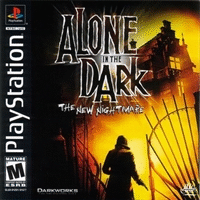

Alone in the Dark - The New Nightmare Dublado

Alone In The Dark: The New Nightmare é um dos jogos da série Alone In The Dark, precursora dos jogos de horror. Lançado em 2001 para Windows, Dreamcast, Playstation, Game Boy Color e Playstation 2, a Darkworks concentrou-se nos gráficos do jogo e tentou balancear a parte de ação com o suspense. Foi relançado em 2012 para Playstation 3 e Playstation Portable, pelo serviço PSN.